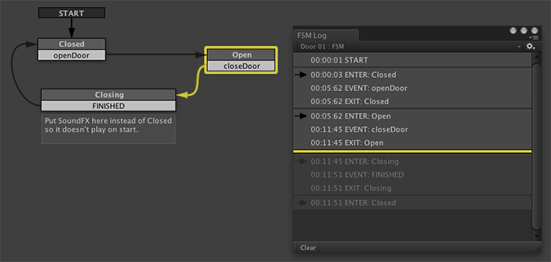
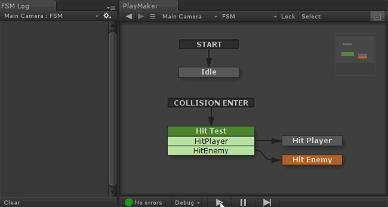
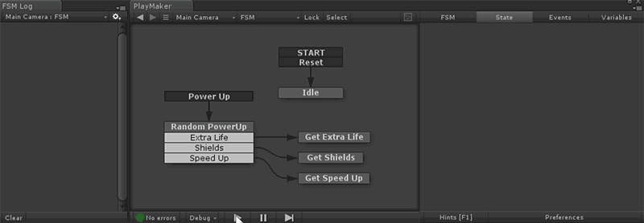

Open the Log Window from the Debug Menu or Main Menu.
State changes often happen too quickly to examine in real time. The Log Window lets you examine events and transitions to see what really happened.

The FSM Log lets you examine each FSM in isolation, whereas the Unity Console Log lets you see all log events in a single list. Both views are useful when debugging.
You can chose to forward playMaker log entries to the Unity Console in Preferences. Error log entries are always forwarded to the console.
HINT: The time code lets you check events across different FSMs at around the same time.
Debug Flow
Pausing a running game will activate Debug Flow. You can now click anywhere in the log window to jump to that time. You can also use the Prev/Next buttons on the Debug Toolbar.
NOTE: Debug Flow time is synchronized across all areas of the editor. So the Graph View, Log Windows, State Inspector, Variables Manager, etc. will all show the state of the game at that time.
User Interface
The dropdown at the top of the dialog lets you select any FSM in the scene to look at its log.
Log entries follow these conventions:
- START - Logged when the FSM is enabled.
- EVENT: [EventName] - Logged when the FSM receives an event.
- EXIT: [StateName] - Logged when a state is exited.
- ENTER: [StateName] - Logged when a state is entered.
- STOP - Logged when the FSM is disabled.
Additionally, Actions and scripts can log 3 types of entries:
- INFO: Plain text log.
- WARNING: Warning icon and message.
- ERROR: Error icon and message. Also pauses execution.
Icons help you read the log at a glance:
- Enter state.
- Warning
- Error
Tips
Use Up/Down cursor keys in the FSM Log to step through state changes:

Click the Event entry in the FSM Log to select the action that sent the event:
